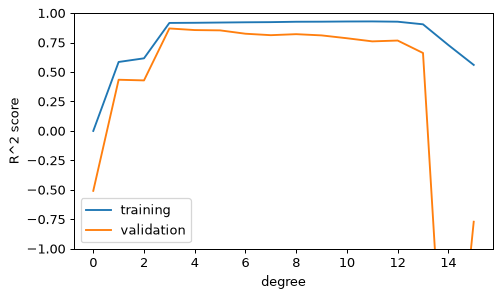

- Handbook 5.03 Hyperparameters and Model Validation
間違ったやり方と、ホールドアウト法
モデルを学習に使ったデータそのもので評価すると、点数が不当に高くなります。最近傍法（1-NN）は訓練データを丸暗記するので、その極端な例です。
from sklearn.datasets import load_iris from sklearn.neighbors import KNeighborsClassifier from sklearn.metrics import accuracy_score iris = load_iris() X, y = iris.data, iris.target model = KNeighborsClassifier(n_neighbors=1).fit(X, y) print(accuracy_score(y, model.predict(X))) # 同じデータで評価
正解率100%…ですが、これは答えを見ながらテストを受けたようなものです。そこで、データを2つに分けるのがホールドアウト法です。
from sklearn.model_selection import train_test_split Xtr, Xte, ytr, yte = train_test_split(X, y, random_state=0, train_size=0.5) model.fit(Xtr, ytr) print(Xtr.shape, Xte.shape) print(accuracy_score(yte, model.predict(Xte)))
「勉強に使った問題」ではなく「初めて見る問題」で点数をつける。それがテスト用データです。
X, y を7:3に分けて（テスト用が30%）、random_state=0 で Xtr, Xte, ytr, yte に入れてください。
Xtr, Xte, ytr, yte = train_test_split(X, y, test_size=0.3, random_state=0)
test_sizeかtrain_sizeのどちらかを指定します。
交差検証：cross_val_score
1回の分割だと、たまたまの偶然に左右されます。交差検証は、データをk個に分け、順番にテスト役を交代して、k回の点数を平均します。
from sklearn.datasets import load_iris from sklearn.neighbors import KNeighborsClassifier iris = load_iris() X, y = iris.data, iris.target
from sklearn.model_selection import cross_val_score model = KNeighborsClassifier(n_neighbors=1) scores = cross_val_score(model, X, y, cv=5) print(scores) print(scores.mean().round(3))
5回の点数のばらつきも見えます。平均を代表値にします。
5分割なら、「5回テスト」して平均。どのデータも1回ずつテスト役になります。
KNeighborsClassifier(n_neighbors=3) を5分割の交差検証で評価し、点数の平均を m に入れてください。
m = cross_val_score(KNeighborsClassifier(n_neighbors=3), X, y, cv=5).mean()
約0.967です。
過学習と未学習
モデルが単純すぎると未学習（高バイアス）、複雑すぎて訓練データのノイズまで覚えると過学習（高バリアンス）になります。多項式の次数を動かして、訓練点数と検証点数を並べてみましょう。
from sklearn.preprocessing import PolynomialFeatures from sklearn.linear_model import LinearRegression from sklearn.pipeline import make_pipeline from sklearn.model_selection import validation_curve rng = np.random.RandomState(1) Xd = rng.rand(40, 1) * 6 - 3 yd = np.sin(Xd).ravel() + 0.3 * rng.randn(40)
model = make_pipeline(PolynomialFeatures(), LinearRegression()) degree = np.arange(0, 16) train, val = validation_curve(model, Xd, yd, param_name='polynomialfeatures__degree', param_range=degree, cv=5) plt.plot(degree, train.mean(axis=1), label='training') plt.plot(degree, val.mean(axis=1), label='validation') plt.ylim(-1, 1) plt.xlabel('degree') plt.ylabel('R^2 score') plt.legend()

訓練の点数は次数とともに上がり続けますが、検証の点数はある次数でピークになり、その後下がります。このピークがちょうどよい複雑さです。
訓練点数だけ高い→過学習、両方低い→未学習。検証点数で選びます。
from sklearn.model_selection import learning_curve sizes, tr, va = learning_curve(make_pipeline(PolynomialFeatures(3), LinearRegression()), Xd, yd, cv=5, train_sizes=[0.3, 0.6, 1.0]) print(sizes)
訓練点数が 0.99、検証点数が 0.55 のとき、過学習か未学習か。変数 state に "overfitting" か "underfitting" を入れてください。
state = "overfitting"
訓練だけ高いので過学習です。
グリッドサーチ：GridSearchCV
ハイパーパラメータの候補を全部の組み合わせで試し、交差検証で一番良いものを選ぶ道具がGridSearchCVです。
from sklearn.model_selection import GridSearchCV param_grid = {'polynomialfeatures__degree': np.arange(0, 9), 'linearregression__fit_intercept': [True, False]} grid = GridSearchCV(make_pipeline(PolynomialFeatures(), LinearRegression()), param_grid, cv=5) grid.fit(Xd, yd) print(grid.best_params_)
最良のモデルで予測するにはgrid.best_estimator_を使います。
best = grid.best_estimator_ print(best.predict([[0.0]]).round(3))
「次数は0〜8、切片あり／なし」の全パターンを交差検証して、一番良い設定を教えてくれます。
KNNの n_neighbors を 1, 3, 5 で試すための param_grid 辞書を作ってください。
param_grid = {'n_neighbors': [1, 3, 5]}
キーはパラメータ名、値は候補のリストです。